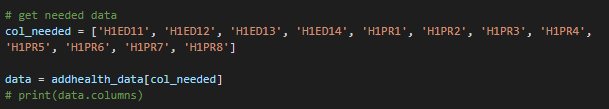
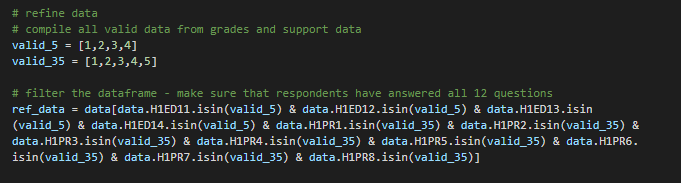
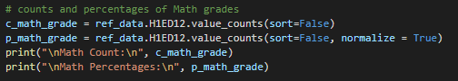
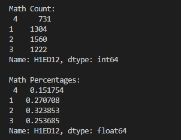
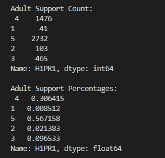
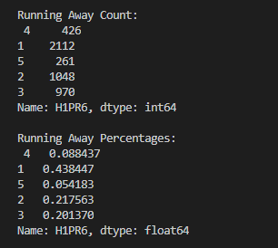

Running My First Program
In order to refine the AddHealth dataset to my study’s needs, I have chosen Python to get all the columns and rows that I will be needing. The variables to be used are stated in the first blog post for this activity which you could see here. To summarize, I will be using the questions that correspond to the respondents’ grades in their Language, Math, History, and Science subjects found in Section 5 of the dataset. I will also be using all of the questions found in Section 35 which talks about the respondent’s perception of support by other people.

Using the code above, I have gathered the column names of the variables that I would need and made a new data frame with only those columns.

Basically, I put all valid answers from the two sections and put them inside of an array for easier validation. I, then, proceeded to filter all the rows to get only the responses which have valid answers for all the questions needed for this study. There are no missing data from the columns I have chosen however I have removed some rows.
For the grades section, I have taken out those who have answered “Didn’t take this subject”, “Took the subject, but it wasn’t graded this way”, “Does not apply”, “Refused”, and “Don’t know” which have the values 5, 6, 96, 97, and 98 respectively. For Section 35 which is a likert scale, I removed rows with values such as “Does not apply”, “Refused”, and “Don’t know” which have the values, 6, 96, and 98 respectively.
This is to ensure that my data will only consist of rows having a grade as its value.

After that, I gathered the counts and percentages of all the answers from the questions. Seeing them all listed down makes it easier for it to be read and analyzed. I used the same method to get the counts and percentages for other questions. I also have attached three (3) frequency distributions I have gathered.

This is the data under the H1ED12 column and it asks the respondent on what their Math grade is. The values are equivalent to the following:
- 1 = A
- 2 = B
- 3 = C
- 4 = D or below

The H1PR1 columns contains the answers to the question, “How much do you feel that adults care about you?” The values are equivalent to the following:
- 1 = Not at all
- 2 = Very Little
- 3 = Somewhat
- 4 = Quite a bit
- 5 = Very much

The last frequency distribution that I have attached are for those respondents who have wanted to leave their homes. This is the data under the H1PR6 column and it hast the same values as the H1PR1 column. This shows that 2112 respondents do not want to leave their homes (43.84%) while 261 respondents felt otherwise (5.42%)
If you are interested to see the whole code, I have attached the link to it below.
View my code